전자산업기사 (2010-10-10 기출문제)
1과목: 전자회로
1. 일반적인 FET의 특징에 대한 설명으로 틀린 것은?
- BJT보다 입력임피던스가 크다.
- BJT보다 열적으로 안정하다.
- BJT보다 잡음특성이 좋다.
- BJT보다 이득 대역폭 적이 크다.
(정답률: 75%)

2. 전력증폭기에 대한 설명으로 옳은 것은?
- A급의 경우가 전력효율이 가장 좋다.
- C급의 효율은 50[%] 이하로 AB급보다 낮다.
- B급은 동작점이 포화영역 부근에 존재한다.
- C급은 반송파 증폭용이나 주파수 체배용으로 사용된다.
(정답률: 84%)
3. 다음 같은 증폭기에 관한 설명으로 틀린 것은?
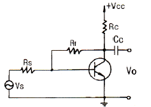
- 부궤환을 걸어줌으로써 출력 임피던스는 감소한다.
- 부궤환을 걸어줌으로써 입력 임피던스는 증가한다.
- 무궤환 때에 비해 안정도가 좋아진다.
- 부궤환을 걸어줌으로써 일그러짐은 감소한다.
(정답률: 75%)
4. 이상적인 차동증폭기의 공통성분 제거비(CMRR)는?
- 0
- 1
- -1
- 무한대
(정답률: 83%)
5. 다음 회로에서 제너다이오드에 흐르는 전류는? (단, 제너 다이오드의 제너항복전압(VZ)은 10[V]이다.)
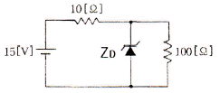
- 0.2[A]
- 0.4[A]
- 0.7[A]
- 1.2[A]
(정답률: 45%)
6. 다음 증폭기 회로에서 이미터 저항 RE를 사용하는 이유로 가장 적합한 것은?
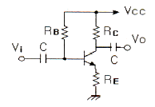
- 회로의 안정화
- 전압 증폭도의 증가
- 주파수 대역폭의 증가
- 전류 증폭도의 증가
(정답률: 85%)
7. 반송파 전력이 50[kW]이고 80[%]로 진폭변조(AM)하였을 때 피변조파 전력은?
- 58[kW]
- 66[kW]
- 82[kW]
- 100[kW]
(정답률: 66%)
8. 연산증폭기에 계단파 입력전압이 인가되었을 때 시간에 따라 출력전압의 변화율은?
- 전류 드리프트
- 슬루 레이트
- 동상신호 제거비
- 출력 오프셋 전압
(정답률: 85%)
9. 다음 회로에서 R1=200[kΩ], R2=20[kΩ]일 때 부궤환율(β)은?
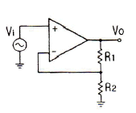
- 약 0.012
- 약 0.023
- 약 0.091
- 약 0.91
(정답률: 78%)
10. fτ(단위 이득 주파수)에 대한 설명으로 가장 적합한 것은?
- 증폭기의 이득이 0[dB]가 되는 주파수
- 증폭기의 이득이 10[dB]가 되는 주파수
- 증폭기의 이득이 최대 이득에서 3[dB]가 떨어지는 주파수
- 증폭기의 이득이 최대 이득에서 6[dB]가 되는 주파수
(정답률: 68%)
11. 트랜지스터 증폭기의 저주파(중간영역)에서의 전류이득을 0[dB]라고 할 때 α 차단주파수에서의 전류이득은?
- 0[dB]
- -1[dB]
- -3[dB]
- -6[dB]
(정답률: 66%)
12. 구형파 펄스에서 펄스폭이 10[μs], 주파수가 1[kHz]일 때 평균전력이 20[W]이었다면, 이 펄스의 첨두 전력은?
- 1[kW]
- 2[kW]
- 3[kW]
- 4[kW]
(정답률: 70%)
13. 정현파 발진기에 속하지 않는 것은?
- 블로킹 발진기
- 콜피츠 발진기
- 수정 발진기
- 하틀리 발진기
(정답률: 54%)
14. 단상 반파 정류회로의 이론상 최대 정류효율은?
- 40.6[%]
- 48.2[%]
- 81.2[%]
- 91.6[%]
(정답률: 67%)
15. 어떤 연산증폭기의 DC 오프셋 전압이 2[mW]이고 전압증폭도가 1000이다. 이 연산증폭기의 +입력단자와 -입력단자 사이에 5[mV] 전압을 인가하였을 때 출력전압은? (단, 연산증폭기의 입력저항은 무한대, 출력저항은 0이다.)
- 2[V]
- 3[V]
- 4[V]
- 5[V]
(정답률: 42%)
16. 이미터 플로어 증폭기의 입력 및 출력 임피던스에 대한 설명으로 가장 적합한 것은?
- 입력임피던스와 출력임피던스는 거의 비슷하다.
- 입력임피던스와 출력임피던스는 모두 매우 낮다.
- 입력임피던스는 매우 높고, 출력임피던스는 매우 낮다.
- 입력임피던스는 매우 낮고, 출력임피던스는 매우 높다.
(정답률: 83%)
17. JFET의 포화영역에서 드레인 전류(IDS)를 나타내는 식으로 가장 적합한 것은? (단, IDSS : VGS = 0일 때 드레인 전류, VP : 핀치오프 전압이다. )
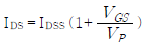
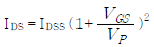
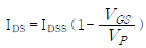
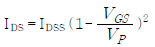
(정답률: 59%)
18. 정류회로의 직류 출력전압이 25[V]이고, 리플전압이 100[mV]일 때 리플율은?
- 0.1[%]
- 0.4[%]
- 1[%]
- 4[%]
(정답률: 73%)
19. 부궤환 증폭기의 특징이 아닌 것은?
- 이득의 감소
- 안정도의 감소
- 잡음의 감소
- 주파수대역폭의 증가
(정답률: 83%)
20. 전압이득이 40[dB]인 증폭기에 궤환율이 0.1의 부궤환을 걸었을 때 증폭기의 전압이득은?
- 9.1
- 4.9
- 49
- 91
(정답률: 62%)
2과목: 전기자기학 및 회로이론
21. 전하밀도 σ[C/m2 ], 판간거리 d[m]인 무한평행판 대전체 간의 전위차는?
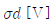
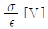
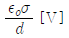
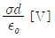
(정답률: 42%)
22. 유전율이 각각 다른 두 종류의 유전체 경계면에 전속이 입사될 때, 이 전속은 어떻게 되는가?
- 굴절
- 반사
- 회절
- 직진
(정답률: 85%)
23. 자유공간에 있어서 전파가 E(z,t)=103 sin(ωt-βz)ay[V/m]일 때 자파 H(z,t)는?
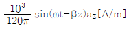
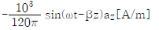
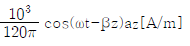
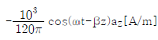
(정답률: 53%)
24. 플레밍의 왼손 법칙에서 엄지손가락의 방향은?
- 전류의 반대 방향
- 자력선의 방향
- 전류의 방향
- 힘의 방향
(정답률: 80%)
25. 평등전계 내에서 얻어지는 전하의 운동속도는?
- 전위차에 비례한다.
- 전위차의 제곱근에 비례한다.
- 전위차의 제곱에 비례한다.
- 전위차의 1.6승에 비례한다.
(정답률: 57%)
26. 권수 3000회인 공심 코일의 자기인덕턴스는 0.06[mH]이다. 자기인덕턴스를 0.135[mH]로 하려면 권수는?
- 2000회
- 4500회
- 5500회
- 6750회
(정답률: 62%)
27. 공간 도체 내에서 자속이 시간적으로 변할 때 성립되는 식은?
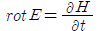
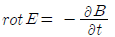
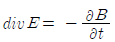
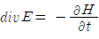
(정답률: 55%)
28. 안테나에서 파장 20[cm]인 평면파가 자유공간에 방사될 때, 발신주파수는?
- 750[MHz]
- 1000[MHz]
- 1500[MHz]
- 2000[MHz]
(정답률: 54%)
29. 단면적 3[cm2] 자로의 길이 30[cm] 코일의 권수 3000회의 환상 솔레노이드가 있을 때 철심의 비투자율 μs=1000이라면 자기인덕턴스[H]는 약 얼마인가?
- 9.3[H]
- 10.3[H]
- 11.3[H]
- 12.3[H]
(정답률: 52%)
30. E = 4xax - 4yay 일 때 점(1,2)를 지나는 전기력선의 방정식은?
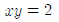
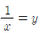
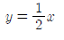
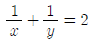
(정답률: 59%)
31. v(t)= 141.4 sinωt[V]이고, i(t)= 7.07 sinωt[A]일 때, 실효 전력은?
- 400[W]
- 450[W]
- 500[W]
- 1000[W]
(정답률: 42%)
32. 다음과 같은 회로에서 쌍대회로가 될 수 있는 것은?
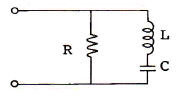
- RLC가 직렬로 연결된 회로
- RC 병렬회로에 L이 직렬 연결된 회로
- RC 병렬회로에 C가 직렬 연결된 회로
- LC 병렬회로에 R이 직렬 연결된 회로
(정답률: 73%)
33. 임피던스 정합에 관한 사항으로 옳지 않은 것은?
- 역률은 1로 된다.
- 최대 전력을 전송할 수 있는 조건이다.
- 부하 양단의 전압과 전압이 같은 상태이다.
- 전원과 부하 임피던스의 절대값은 같고 위상각은 서로 반대가 된다.
(정답률: 48%)
34. 5[MHz]의 공진 주파수를 갖는 공진회로에서 Q가 200일 때 대역폭은?
- 25[kHz]
- 1[MHz]
- 2[MHz]
- 5[MHz]
(정답률: 66%)
35. 다음 회로에서 스위치 S를 닫았을 때 흐르는 전류 i(t)는?
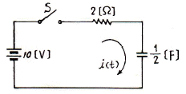
- 5e-t[A]
- 5(1-e-t)[A]
- -5e-t[A]
- 5(1+e-t)[A]
(정답률: 59%)
36. 다음 회로에서 90[Ω]에 흐르는 전류 I는?
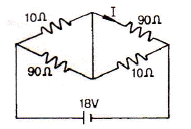
- 0.1[A]
- 0.2[A]
- 0.9[A]
- 1[A]
(정답률: 61%)
37. 다음 회로의 4단자 정수 중 B의 값은?
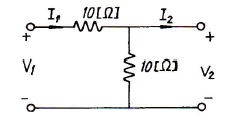
- 1[Ω]
- 5[Ω]
- 10[Ω]
- 20[Ω]
(정답률: 55%)
38. 권선비가 1인 이상적인 트랜스포머의 권선이 코어 주위에 반대방향으로 감겨있다면 2차 전압은?
- 1차 전압과 동위상이다.
- 1차 전압보다 크다.
- 1차 전압보다 작다.
- 1차 전압과 역위상이다.
(정답률: 68%)
39. 소비전력이 100[W]인 회로의 역률이 0.8이면 이 회로의 무효전력은?
- 125[Var]
- 80[Var]
- 75[Var]
- 60[Var]
(정답률: 54%)
40. 정현파 교류전압의 실효값은 최대값의 약 몇 [%] 인가?
- 141.2
- 66.7
- 70.7
- 50
(정답률: 72%)
3과목: 전자계산기일반
41. 2-주소 명령어에 대한 설명으로 틀린 것은?
- 연산자와 2개의 주소부분으로 구성되어 있다.
- 2개의 주소부분을 사용하기 때문에 적어도 2번 메모리에 접근해야 한다.
- 모든 데이터의 처리가 누산기에 의해서 이루어지는 경우에 사용된다.
- 주소 부분에 레지스터나 메모리 주소를 지정한다.
(정답률: 51%)
42. 주기억장치가 1초에 전달할 수 있는 정보량은?
- 주기억장치 접근율
- 주기억장치 대역폭
- 주기억장치 접근실패율
- 주기억장치 사용의 편의성
(정답률: 61%)
43. 컴퓨터와 직접 연결해서 도형의 그림을 출력으로 나타내거나 또는 도형을 그리게 하여 그대로 입력하는 장치는?
- 콘솔 타이프라이트
- 도형 표시장치
- 광학 마크판독기
- 자기잉크 문자판독기
(정답률: 75%)
44. 입ㆍ출력 기능을 동시에 할 수 있는 장치는?
- OCR
- MICR
- 카드 천공장치
- 터치스크린
(정답률: 76%)
45. 컴퓨터 주기억장치 용량이 4096비트이고, 워드 길이가 16비트일 때, PC(Program Counter), AR(Address Register)와 DR(Data Register)의 크기는?
- PC=12, AR=12, DR=16
- PC=12, AR=12, DR=8
- PC=16, AR=8, DR=16
- PC=8, AR=8, DR=16
(정답률: 51%)
46. 주기억장치에서 기억된 명령을 해독하기 위하여 꺼내는 작업은?
- fetch
- timing
- polling
- interrupt
(정답률: 77%)
47. 다음 중 자바 프로그램의 가장 큰 단위는?
- 패키지
- 클래스
- 자바 인터페이스
- 메소드
(정답률: 80%)
48. 어떤 인스트럭션이 수행되지 위하여 가장 먼저 행해야 하는 마이크로오퍼레이션은?
- IR → MAR
- PC → MAR
- PC → MBR
- PC+1 → PC
(정답률: 81%)
49. 컴퓨터 통신망의 표준화를 추진하는 과정에서 개발된, 일련의 LAN 접속방법 및 프로토콜 표준들을 지칭하는 것과 관련 있는 것은?
- IEEE 802
- IEEE 1394
- IEEE 754
- ANSI
(정답률: 64%)
50. 가산기능과 보수기능만 있는 산술논리연산장치(ALU)를 이용하여 F=A-B를 하고자 할 때 옳은 방법은?
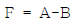
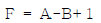
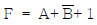
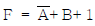
(정답률: 71%)
51. 다음 중 가장 우선순위가 높은 인터럽트는?
- 입출력 인터럽트
- 전원, 하드웨어 고장 등의 인터럽트
- 내부 인터럽트
- 조작원 요구 인터럽트
(정답률: 80%)
52. 10진수 183.625를 16진수로 변환하면?
- BC.D
- B7.A
- BC.10
- B7.10
(정답률: 57%)
53. 어셈블리어에 대한 설명으로 옳지 않은 것은?
- 기계어에 비해 프로그램 작성이나 수정이 어렵다.
- 호환성이 없으므로 전문가 외에는 사용하기 어렵다.
- 컴퓨터 동작 원리에 대한 전문 지식이 필요하다.
- 기계어보다 사용하기 편리하다.
(정답률: 73%)
54. 8비트의 자료 11001011에 대하여 좌 시프트(left shift) 논리연산을 1비트씩 2번했을 때와 좌로테이트(left rotate) 논리연산을 2번했을 때의 결과 값은?
- 11011001, 11011001
- 01100100, 01110110
- 00101100, 00101111
- 01100100, 01100100
(정답률: 65%)
55. 서브루틴을 호출할 때 복귀 주소(return address)를 기억하는데 주로 사용되는 것은?
- 스택
- 상태 레지스터
- 프로그램 카운터
- 프로그램 상태 레지스터
(정답률: 72%)
56. RISC 컴퓨터에 대한 설명으로 틀린 것은?
- 비교적 느린 메모리와 빠른 클록
- 고정된 길이의 명령어 제공
- 하드와이어드 방식의 프로세서와 소프트웨어로 구성
- 한 사이클에 명령을 수행하도록 구성
(정답률: 72%)
57. 코딩을 하면 바로 프로그램이 작성될 수 있을 정도로 가장 세밀하게 그려진 순서도는?
- 개략 순서도
- 상세 순서도
- 시스템 순서도
- 처리 순서도
(정답률: 86%)
58. 10진수 8을 그레이코드로 변환하면?
- 0101
- 0100
- 1100
- 1101
(정답률: 81%)
59. 순서도를 작성하는 일반적인 규칙이 아닌 것은?
- 약속된 표준 기호를 사용한다.
- 흐름에 따라 오른쪽에서 왼쪽으로 그린다.
- 기호 내부에 처리 내용을 간단, 명료하게 기술한다.
- 한 면에 다 그릴 수 없거나 연속적인 표현이 어려울 때는 연결 기호를 사용한다.
(정답률: 86%)
60. 특정 비트들을 마스크(mask)시키기 위하여 사용되는 논리 연산은?
- XOR
- NOT
- AND
- OR
(정답률: 70%)
4과목: 전자계측
61. 오실로스코프의 동기 방식은?
- 수직 동기 방식
- 강제 동기 방식
- 트리거 동기 방식
- 독립 톱니파 동기 방식
(정답률: 50%)
62. 전해콘덴서의 용량을 측정하는 브리지회로에서 직류를 중첩시키는 이유는?
- 브리지 회로를 보호하기 위하여
- 절연의 파괴를 막기 위하여
- 외부 자장의 영향을 막기 위하여
- 산화 피막의 환원 손실을 막기 위하여
(정답률: 51%)
63. 감도와 정확도가 높으나 교류회로에서는 사용할 수 없는 검류계는?
- 가동 코일형
- 진동형
- 열전형
- 전류력계형
(정답률: 65%)
64. 신호의 에너지와 전압을 주파수의 함수로 정보를 제공하는 실시간 분석기는?
- 스펙트럼 분석기
- 스위프 신호발생기
- 고조파 왜율 분석기
- 디지털 스토리지 스코프
(정답률: 70%)
65. 헤테로다인 주파수계에 단일 비트(single bit)법 보다 2중 비트(double bit)법이 좋은 이유는?
- 구조가 간단하므로
- 취급이 용이하므로
- 고정용 발진기를 사용하므로
- 제로 비트 식별이 용이하므로
(정답률: 77%)
66. 오실로스코프 전압을 측정한 결과 진폭이 5cm[p-p]의 크기로 나타났다. 이 전압의 실효값은? (단, 오실로스코프의 수직편향감도는 1[mm/V]이다.)
- 약 17.7[V]
- 약 19.5[V]
- 약 25[V]
- 약 50[V]
(정답률: 63%)
67. 단상 교류 전력을 측정하기 위한 방법이 아닌 것은?
- 3 전류계법
- 3 전압계법
- 단상 전력계법
- 3 전력계법
(정답률: 78%)
68. 출력주파수의 특성을 측정하기 위한 장비가 아닌 것은?
- Frequency counter
- Frequency synthesizer
- Oscilloscope
- Spectrum analyzer
(정답률: 66%)
69. 불규칙한 비주기성 파형 또는 한 번 밖에 일어나지 않는 현상의 파형 측정에 적당한 계기는?
- 주파수 카운터
- 싱크로스코프
- VTVM
- 엡스타인 장치
(정답률: 81%)
70. 오실로스코프 상에서 그림과 같은 도형을 얻었다. c=0.5이고, d=1이라면 위상차 θ는?
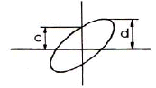
- θ = 0°
- θ = 30°
- θ = 90°
- θ = 150°
(정답률: 78%)
71. 오실로스코프(oscilloscope)는 높은 주파수 또는 펄스(pulse)와 같은 충격성 전압이나 전류를 관측할 수 있는 계기로서 사용상 주의점에 해당하지 않는 것은?
- 접지 단자는 반드시 접지한다.
- 관측 파형은 항상 중앙에 오게 한다.
- 사용하지 않을 때는 휘도를 낮추던가 전원을 끈다.
- 관측하려는 신호의 주파수가 낮거나 직류의 경우는 직접 단자를 사용한다.
(정답률: 75%)
72. 오실로스코프(Oscilloscope)에서 톱니파를 관측파에 동기시키는 이유는?
- 휘점을 수평 진동하기 위하여
- 파형을 안정하기 위하여
- 파형을 정지시키기 위하여
- 휘도의 초점을 맞추기 위하여
(정답률: 67%)
73. 오실로스코프로 측정 불가능한 것은?
- 전압
- 변조도
- 주파수
- 코일의 Q
(정답률: 88%)
74. 오실로스코프와 조합하여 FM 수신기의 주파수 변별기 등 각종 고주파 회로의 주파수 특성 및 대역 조정에 이용되는 발진기는?
- CR 발진기
- 음차 발진기
- 비트(beat) 발진기
- 소인(sweep) 발진기
(정답률: 73%)
75. 맥스웰 브리지(Maxwell bridge)로 측정할 수 있는 것은?
- 코일의 인덕턴스
- 정전 용량
- 역률
- 유전체의 손실각
(정답률: 69%)
76. 브라운관 상에 나타난 그림과 같은 변조 파형의 최소치 B를 4[mm]라 할 때 변조도 80[%]로 하기 위해서는 최대치 A를 몇 [mm]로 하면 되는가?
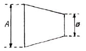
- 30[mm]
- 36[mm]
- 40[mm]
- 43[mm]
(정답률: 71%)
77. 최대지시 1[V]인 직류전압계의 최대 전류가 1[mA]라면 직류 전압계로 최대지시 100[V]의 전압계를 만들고자 하는 경우 사용될 배율 저항은?
- 90[kΩ]
- 99[kΩ]
- 100[kΩ]
- 101[kΩ]
(정답률: 66%)
78. 칼로리 미터법에 의해 고주파 전력을 측정하는 식으로 옳은 것은? (단, 인입구 온도 T1[℃], 출구의 온도 T2[℃], 냉각수의 유량을 Q[cc/min]라 한다.)
- P = KQ (T2 + T1)[W]
- P = KQ (T1 - T2)[W]
- P = KQ (T1 × T2)[W]
- P = KQ (T2 - T1)[W]
(정답률: 80%)
79. 절연물의 유전체 손실각을 측정하는데 쓰이는 측정기는?
- 맥스웰 브리지
- 셰링 브리지
- 전위차계
- 코올라우시 브리지
(정답률: 78%)
80. 내부 저항이 무한대인 전압계로 단자 A-B간의 전압을 측정하면?
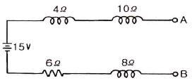
- 3[V]
- 6[V]
- 10[V]
- 15[V]
(정답률: 83%)